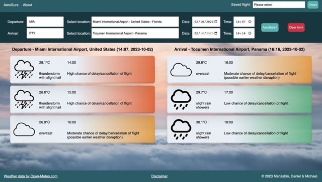

A solo project and my very first full stack app. Gravel Travel is a travel wishlist app where
a user can track countries and locations they would like to visit and log trips to locations they
have visited.
Screenshot of Gravel Travel
Initially completed over just a single week a third of the way into my course at CodeClan. I decided
to return to Gravel Travel after graduating as a chance to revisit Python & SQL, apply the
knowledge I had gained during the remiainder of the course to overhaul the app as well as to add
gain some completely new skills.
The project was a chance to work on object oriented programming with Python, web programming using
the model-view-controller design pattern, build RESTful routes and perform CRUD actions with a
postgreSQL database.
A solo-developed React.js app which creates abstract images via randomly generated coloured dots.
Abstract is my first project to be hosted online.
Abstract began as an experiment to generate abstract images in real-time. The first
version poulated a series of <div> elements in random positions on a browser display and
unsurprisingly the app performance struggled with higher numbers of <div>s. I found an
alternative solution by using the <canvas> element but enjoyed the <div> aesthetic
so tried to retain as much of the original styling as possible.
The newest version of Abstract adds user interactivity via controls to change several input
parameters such as dot size or the rate of the colour change. A handful of presets are also available to
showcase the different capabilities of the dot generating algorithm.
Image generation in progress with Abstract
Hosting an app online is certainly a big milestone in the life of a developer, however the deployment
of Abstract brought problems that I was unable to anticipate from the comfort of my own hardware setup.
I made some significant adjustments to the user interface to improve accessibility and user experience. Some of the changes include:
using CSS media queries to adjust the display on smaller screens
restyling the buttons to give bigger hit areas
relabelling the inputs to better define their purposes
A full stack React.js app using the Open-Meteo.com Weather Forecast and Geocoding APIs. Produced in a single
week as part of a three person group project.
AeroSure is a weather delay prediction tool. The user enters their flight's details (i.e.
departure and arrival locations and times). The locations are entered as stings and converted into
geographic coordinates using the geocoding API, these coordinates are then fed into the weather API
which returns hourly weather forecasts at each location. Logic is then performed which determines if
any adverse weather conditions (such as thunder, hail or heavy winds) near the departure and arrival
times could cause a delay to the flight. A graded traffic light system is used to output a simple
prediction to the user.

An AeroSure flight prediction
This was my first app created as part of a team and was a perfect opportuniy to explore agile
working methods. Some of the practices we adopted to improve productivity and cohesion were daily
stand ups, mob programming and a final project retrospective.
Integrating two separate API requests into the logic of the app was a big learning curve and
significantly improved my confidence and practical ability of using APIs.